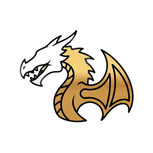

SkyManager
Size
Saved with the deck, per tab
Open key
Quick-fire — hold a modifier + the open key (skips the menu)
Shift +
Ctrl +
Alt +
Menu scale
100%
Each physical key fires its mapped key — bindable in any mod's MCM.
raw sends the true extended code instead (SKSE listeners; MCM shows blank key art).
No hotkeys yet
Press Edit, then Add hotkey to create your first one.
Search everything
CtrlF
Systems
Pick a card — or search above
Since the game started — not saved across restarts.
Nothing fired yet
Press a hotkey and it shows up here — the deck's own rows, numpad chords and quick-fires alike.
Auto-saves as you type · plain text · seeded from keybindings.md
Open key
Deep-opens this tab · default F14
Faces
40
Tab
100%
Icons
100%
Look at an NPC before opening the deck to add them to a category.
Domains key
Opens the deck straight onto this tab · default F15
(through the F13–F24 bridge) · menu size lives in the deck's Edit settings
Press the new Domains key…
Keyboard key, F13–F24, or mouse (middle / Mouse 4 / Mouse 5) · Esc cancels
Containers key
Opens the deck straight onto this tab · default F16
(through the F13–F24 bridge) · menu size lives in the deck's Edit settings
Press the new Containers key…
Keyboard key, F13–F24, or mouse (middle / Mouse 4 / Mouse 5) · Esc cancels
Tuning
Valuable gear bar
—
Not in a scene
Start an OStim scene, then pick from the list to change it.
—
Furniture
—
Key Census
Scanning…
…
Race—
Class
Level
—
Active Effects
Skills 18
Your Story saved ✓
—:—
reading the sky…
Until
For
Longer
24 h
lands —
Time jumps in one step — no ticking, no wait menu. The world catches up
in a single beat. Blocked in combat, same as resting anywhere.
Stays open · game runs live on this tab · toggle modifiers, then click keys
Gold
0 g
Monthly net
0 g
Debt
0 g
Tab size
100%
Scales this tab's text and controls, 60%–160%. Saved with the deck.
In this wardrobe 0
Nothing here yet — click outfits on the right to add them.
All outfits
NPC
Outfit
Choose
Press a key or mouse button…
Held Shift / Ctrl / Alt are captured as modifiers · mouse: middle, Mouse 4, Mouse 5 · Esc cancels